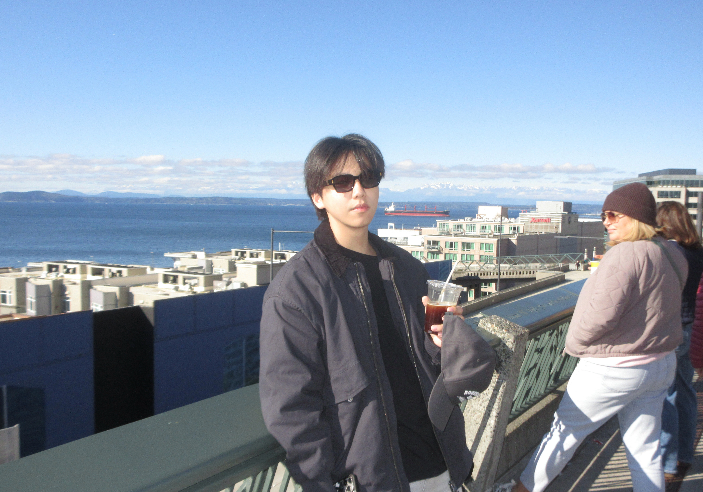

🤔Who is Yugao Pan?🤔
- I would like to have a short introduction to tell eveyrone whose seeing this webpage who I am
- My Chinese name is Yugao Pan
- I was born in Shanghai, China. It's a beautiful city and friendly city for people to visit
- My English name is Mackenzie, and feel free to call both my Chinese and english name
- I was born in 2005. I am currently a third-year student at the University of Toronto Mississauga (UTM), and I am a Digital Enterprise Management (DEM) Specialist